Ton PC, en clair.Your PC, in plain sight.
Aurora surveille ton ordinateur en direct — températures, ventilateurs, disques, réseau, FPS en jeu — et te dit en mots simples s'il va bien. Gratuite, sans compte, et elle n'envoie rien sans que tu le demandes. Aurora watches your computer live — temperatures, fans, drives, network, in-game FPS — and tells you in plain words whether it is doing well. Free, no account, and it sends nothing unless you ask.
La vraie Aurora, filmée en démonstration : rien n'est monté, rien n'est dessiné pour l'occasion. The real Aurora, filmed in demo mode: nothing staged, nothing drawn for the occasion.
Elle ne fait plus que mesurer : elle comprend.It no longer just measures: it understands.
Trois onglets transforment les chiffres en réponses : est-ce que mon PC va bien, qu'est-ce qui a changé, et pourquoi mon jeu rame. Three tabs turn numbers into answers: is my PC doing well, what changed, and why is my game struggling.
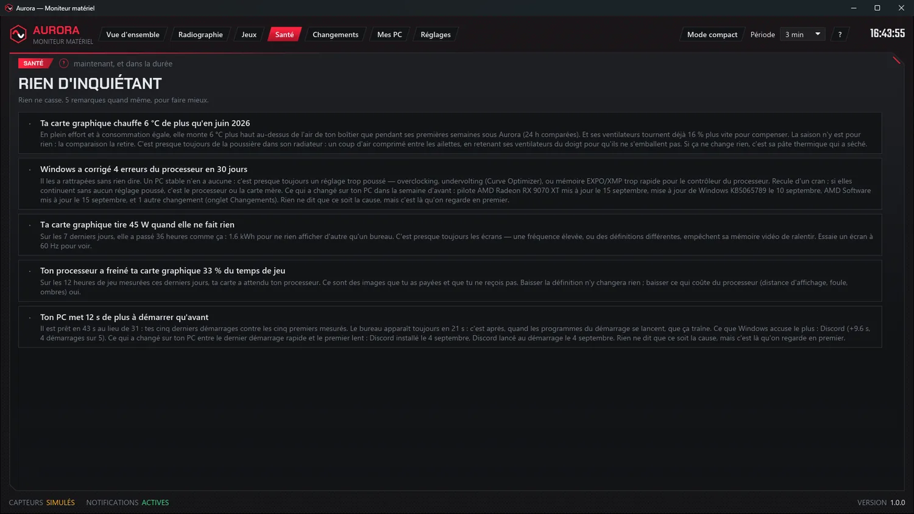
Ton PC va bien ? Aurora te le dit.Is your PC OK? Aurora tells you.
Un bilan refait chaque seconde, qui ne parle que de ce qui cloche, du plus grave au moins grave — et qui te dit aussi quand tout va bien. A check-up redone every second that only talks about what is wrong, most serious first — and also tells you when all is well.
- Disques : usure SMART, place qui manque, chaleur.Drives: SMART wear, running out of space, heat.
- Un ventilateur ou la pompe qui lâche, la pile du BIOS qui faiblit.A fan or the pump giving up, a BIOS battery getting weak.
- Le bloc d'alimentation qui fléchit : son 12 V suivi sous la charge, si ta carte mère le mesure.A power supply starting to sag: its 12 V tracked under load, if your motherboard measures it.
- Ce que Windows note sans rien dire : erreurs matérielles, écrans bleus, arrêts brutaux.What Windows logs without a word: hardware errors, blue screens, sudden shutdowns.
- La chaleur qui monte au fil des mois : la poussière se voit avant de coûter cher.Heat creeping up over the months: dust shows before it costs you.
- Une notification — et une alarme si tu veux — quand c'est urgent.A notification — and an alarm if you want — when it is urgent.
« Elle m'a appris que ma carte graphique tire 50 W à ne rien faire : mes trois écrans l'empêchent de ralentir. » “It taught me that my graphics card draws 50 W while doing nothing: my three displays keep it from slowing down.” — Denis Desbiens
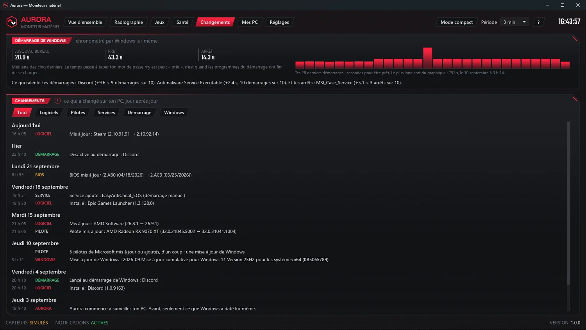
La machine à remonter le tempsThe time machine
Ton PC est lent depuis mardi ? Aurora le photographie toutes les dix minutes et note ce qui change : logiciels, pilotes, services, programmes au démarrage, mises à jour de Windows, BIOS. Your PC has been slow since Tuesday? Aurora takes a snapshot of it every ten minutes and notes what changes: software, drivers, services, startup programs, Windows updates, BIOS.
- Dans l'onglet Santé, un problème vient avec ce qui a changé juste avant.In the Health tab, a problem comes with what changed just before it.
- Le démarrage de Windows chronométré — jusqu'au bureau, prêt, arrêt — et qui le ralentit.Windows startup timed — to the desktop, ready, shutdown — and who slows it down.
- Le bruit filtré : les pilotes qui vont et viennent, les mises à jour de Defender.The noise filtered out: drivers that come and go, Defender updates.
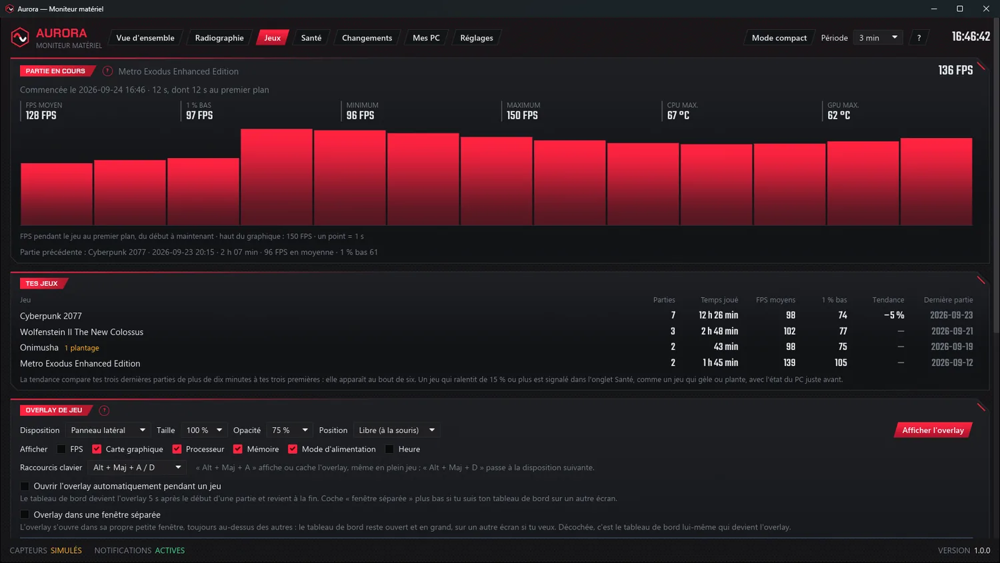
Tes jeux, au fil du tempsYour games, over time
Chaque partie est gardée : FPS moyens, 1 % bas, durée. Aurora voit quand un jeu tourne moins vite qu'à ses débuts. Every session is kept: average FPS, 1 % low, duration. Aurora notices when a game runs slower than it used to.
- Un jeu qui gèle ou plante : l'état du PC juste avant — chaleur, mémoire vidéo, pilote graphique.A game that freezes or crashes: the state of the PC just before — heat, video memory, graphics driver.
- Ce qui limite tes FPS : la carte graphique, ou le processeur qui la freine.What limits your FPS: the graphics card, or the processor holding it back.
- Un overlay par-dessus tes parties, dans sa propre petite fenêtre, sans rien toucher au jeu.An overlay on top of your games, in its own small window, without touching the game.
Sept onglets, un seul programmeSeven tabs, one program
Clique un onglet, comme dans Aurora.Click a tab, just like in Aurora.
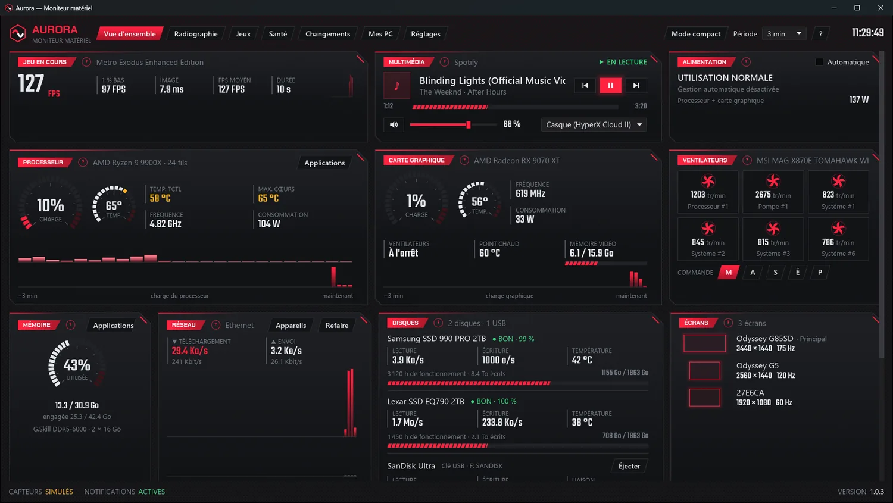
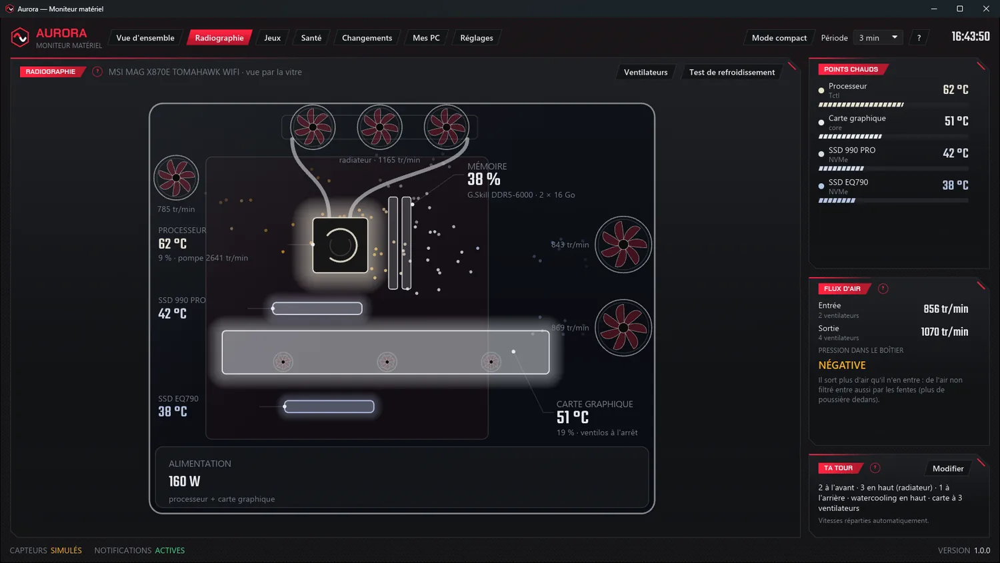
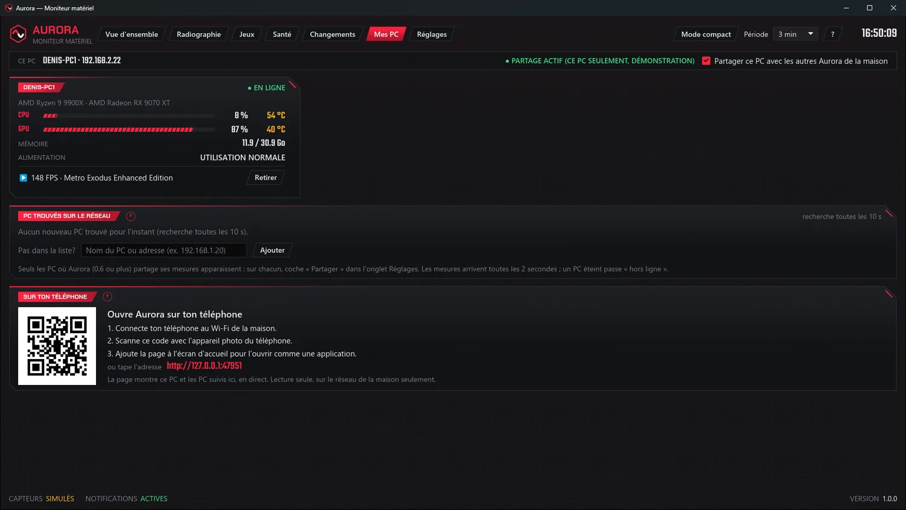
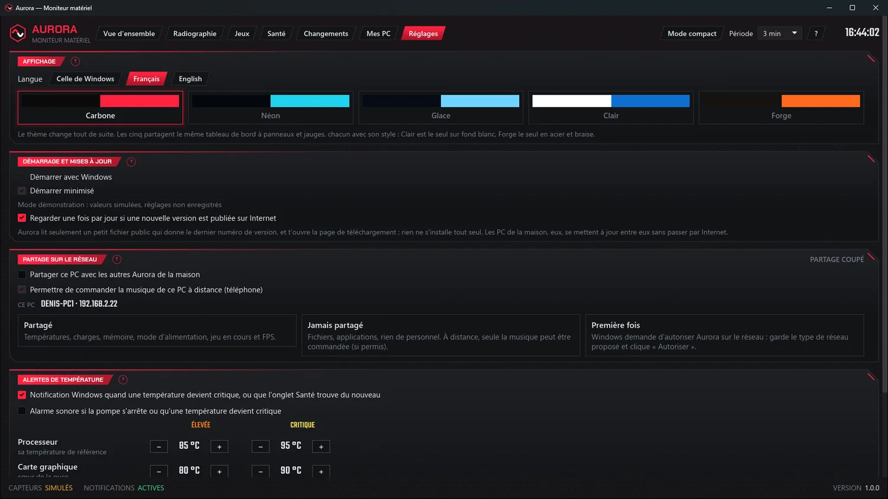
Tout ton PC sur un écran : processeur, carte graphique, mémoire, ventilateurs, disques, réseau, écrans, musique et jeu en cours.Your whole PC on one screen: processor, graphics card, memory, fans, drives, network, displays, music and the game in progress. Ta tour dessinée d'après la vraie : les pièces s'allument selon leur chaleur, l'air circule, les ventilateurs tournent à leur vraie vitesse.Your rig drawn from the real one: parts light up with their heat, the air flows, the fans spin at their real speed. La partie en cours avec ses FPS, et tous tes jeux avec leur tendance, leurs gels et leurs plantages.The session in progress with its FPS, and all your games with their trend, freezes and crashes. Le bilan, en mots simples, du plus grave au moins grave — et ce qui a changé juste avant.The check-up, in plain words, most serious first — and what changed just before. Ce qui a changé sur ton PC, jour après jour, et le démarrage de Windows chronométré.What changed on your PC, day after day, and Windows startup timed. Les autres PC de la maison en tuiles, et la même vue sur ton téléphone grâce à un code QR.The other PCs at home as tiles, and the same view on your phone through a QR code. Langue, thème, démarrage avec Windows, partage et seuils d'alerte, degré par degré.Language, theme, start with Windows, sharing and alert limits, degree by degree.
Ta tour, vue par la vitreYour rig, seen through the window
Dis une fois à Aurora combien de ventilateurs il y a à chaque endroit de ton boîtier. Elle dessine ta tour, et calcule la pression dedans : positive, l'air passe par les filtres et la poussière reste dehors. Tell Aurora once how many fans sit at each spot in your case. It draws your rig, and works out the pressure inside: positive means air comes in through the filters and dust stays out.
Ventilateurs commandésFans under control
Silencieux, Équilibré, Performance, ou Automatique : Performance en jeu, Silencieux pendant la musique. À 100 % au-dessus de 85 °C, rendus à ta carte mère dès qu'Aurora se ferme.Quiet, Balanced, Performance, or Automatic: Performance while gaming, Quiet during music. 100 % above 85 °C, handed back to your motherboard the moment Aurora closes.
Test de refroidissementCooling test
Trois minutes, une note sur 100. Répété au fil des mois, il devient un détecteur de poussière.Three minutes, a score out of 100. Repeated over the months, it becomes a dust detector.
Tout ce qu'un PC a à direEverything a PC has to say
Overlay en jeuIn-game overlay
FPS, températures et charge par-dessus tes parties, en trois dispositions, avec un raccourci même en plein jeu.FPS, temperatures and load on top of your games, in three layouts, with a shortcut that works mid-game.
ApplicationsApplications
Les vingt plus gourmandes, en direct, et un bouton pour en arrêter une. Ce qui fait tourner Windows n'en a pas.The twenty hungriest, live, and a button to stop one. What keeps Windows running has none.
Mes PC et ton téléphoneMy PCs and your phone
Les Aurora de la maison se trouvent toutes seules. Un code QR ouvre la même vue sur ton téléphone, sans rien installer.The Auroras at home find each other. A QR code opens the same view on your phone, with nothing to install.
Appareils du réseauNetwork devices
Ce qui est branché chez toi, avec le fabricant deviné — sans envoyer quoi que ce soit sur ton réseau.What is plugged in at your place, with the maker guessed — without sending anything over your network.
Alimentation automatiqueAutomatic power
Performances en jeu, économie au repos : le mode d'alimentation de Windows change tout seul, et revient à ton habitude en quittant.Performance while gaming, savings at rest: the Windows power plan switches by itself, and returns to your usual one when you quit.
Test de vitesseSpeed test
Latence, descente et montée, gardées dans un carnet pour voir si ta connexion faiblit.Latency, download and upload, kept in a log to see whether your connection is getting weaker.
Mises à jour vérifiéesVerified updates
Les PC de la maison se passent la nouvelle version, et chacun vérifie sa signature avant de l'installer.The PCs at home hand each other the new version, and each one checks its signature before installing it.
Français et anglaisFrench and English
Toute l'application, jusqu'aux unités et aux notifications. La langue suit Windows, ou se choisit.The whole app, right down to units and notifications. The language follows Windows, or you pick it.
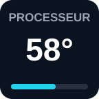
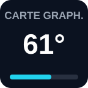
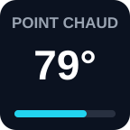
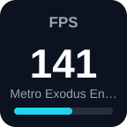
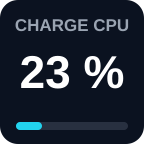
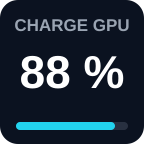
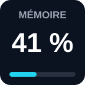
Les touches telles que le module les dessine, avec les mesures de la démonstration d'Aurora. The keys exactly as the plugin draws them, with Aurora's demo readings.
Tes mesures sous les doigtsYour readings at your fingertips
Tu as un Stream Deck d'Elgato ? Le module Aurora met ses mesures sur tes touches : températures, point chaud, charges, mémoire vive, et les FPS du jeu en cours avec son nom. Relues toutes les deux secondes, aux couleurs des alertes d'Aurora ; une touche enfoncée ouvre Aurora. Got an Elgato Stream Deck? The Aurora plugin puts its readings on your keys: temperatures, hotspot, loads, memory, and the FPS of the game you are playing, with its name. Refreshed every two seconds, in Aurora's alert colours; press a key and Aurora opens.
Ce qu'il fautWhat you need
Aurora 1.0.3 ouverte, avec « Partager ce PC » coché dans l'onglet Mes PC, et le logiciel Stream Deck 6.5 ou plus. Le module lit Aurora sur ton PC, sans Internet.Aurora 1.0.3 running, with “Share this PC” ticked in the My PCs tab, and the Stream Deck software 6.5 or later. The plugin reads Aurora on your PC, no Internet needed.
InstallerInstall
Double-clique sur le fichier : le logiciel Stream Deck l'ajoute. Glisse ensuite les touches voulues depuis la catégorie « Aurora ».Double-click the file: the Stream Deck software adds it. Then drag the keys you want from the “Aurora” category.
Le même tableau de bord, cinq habillagesThe same dashboard, five skins
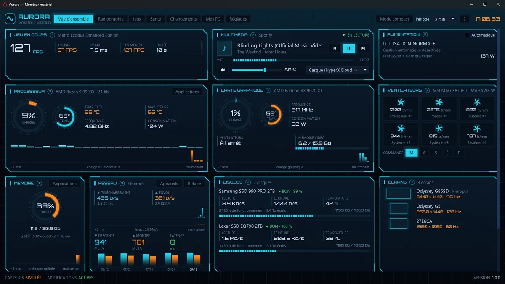
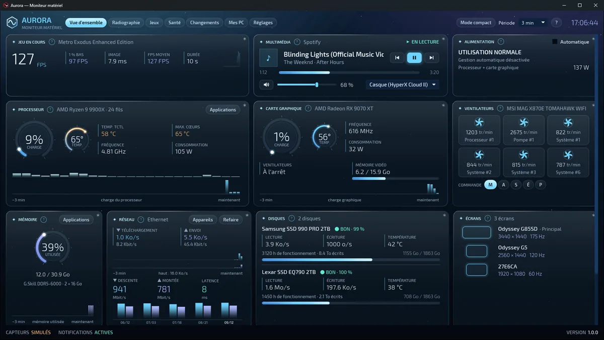
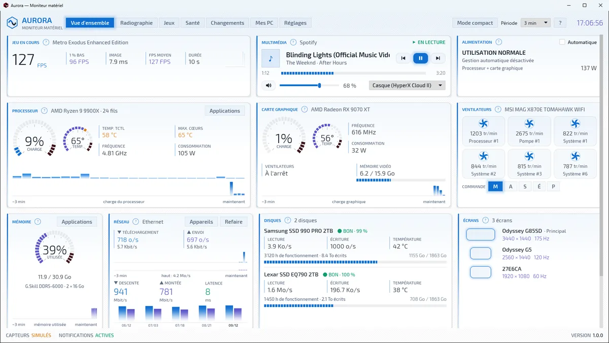
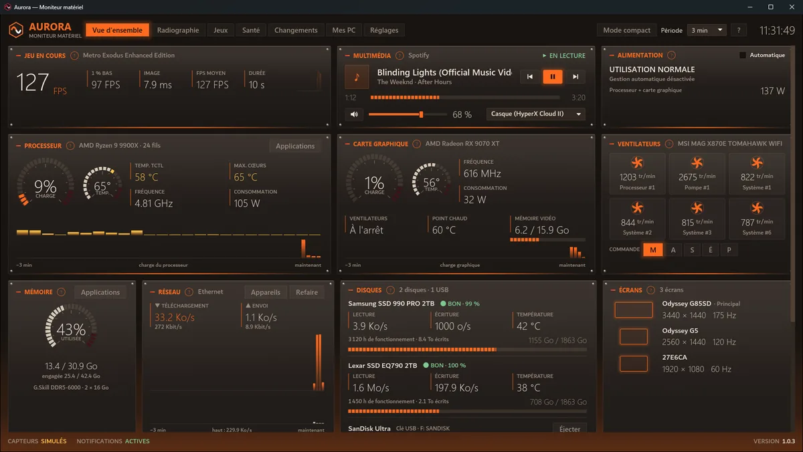
Carbone, celui d'origine : fibre de carbone et rouge vif.Carbon, the original: carbon fibre and vivid red. Néon : science-fiction bleu et orange.Neon: blue-and-orange science fiction. Glace : nuit polaire et verre givré.Ice: polar night and frosted glass. Clair : le seul sur fond blanc, pour une pièce ensoleillée.Light: the only one on white, for a sunlit room. Forge : acier brossé, rivets et braise sous les panneaux.Forge: brushed steel, rivets and embers under the panels.
Le mot de DenisA word from Denis
J'ai longtemps monté mes propres PC, et j'ai toujours voulu savoir ce qui se passe dedans — pas avec des colonnes de chiffres, mais en mots simples. Aurora, c'est l'outil que je voulais pour moi. I built my own PCs for years, and I always wanted to know what goes on inside — not with columns of numbers, but in plain words. Aurora is the tool I wanted for myself.
Elle m'a déjà surpris plus d'une fois : un écran Samsung connecté à mon réseau depuis des mois sans que je le sache, et ma carte graphique qui tire 50 W à ne rien faire. Quand Wolfenstein a gelé deux fois dans la même soirée, j'ai voulu savoir pourquoi : c'est devenu l'onglet Jeux. It has surprised me more than once: a Samsung monitor connected to my network for months without my knowing, and my graphics card drawing 50 W while doing nothing. When Wolfenstein froze twice in one evening, I wanted to know why: that became the Games tab.
Aurora est gratuite, et elle le restera. Si elle t'apprend quelque chose sur ton PC, écris-moi : ça me fait toujours plaisir. Aurora is free, and it will stay that way. If it teaches you something about your PC, write to me: I always enjoy hearing it.
Ce qu'Aurora ne fait pasWhat Aurora does not do
Vie privéePrivacy
Pas de compte, pas de publicité, aucune mesure envoyée, personne suivi. Elle demande trois choses à Internet, et seulement trois : une fois par jour, le numéro de la dernière version ; le test de vitesse, quand tu cliques dessus ; et ton message, quand tu écris au support depuis les Réglages — avec la fiche de ton matériel seulement si tu coches la case (modèles, versions, capteurs ; jamais ton nom, ton adresse, tes jeux ni tes logiciels). Les deux premières se coupent.No account, no ads, no readings sent, nobody tracked. It asks the Internet three things, and only three: once a day, the latest version number; the speed test, when you click it; and your message, when you write to support from Settings — with your hardware sheet only if you tick the box (models, versions, sensors; never your name, address, games or software). The first two can be turned off.
SignéeSigned
Aurora et son installeur sont signés électroniquement au nom de Denis Desbiens : Windows sait d'où vient le fichier, et t'avertirait si quelqu'un le modifiait en chemin.Aurora and its installer are digitally signed in the name of Denis Desbiens: Windows knows where the file comes from, and would warn you if anyone altered it along the way.
Ce qu'il fautWhat you need
Windows 10 (1809 ou plus récent) ou 11, en 64 bits. Les droits administrateur, demandés au démarrage : c'est la seule façon de lire les capteurs de température. L'installeur ajoute au besoin .NET 10 et le pilote PawnIO.Windows 10 (1809 or newer) or 11, 64-bit. Administrator rights, asked for at startup: that is the only way to read temperature sensors. The installer adds .NET 10 and the PawnIO driver if needed.
Trois étapes, sans surpriseThree steps, no surprises
Télécharge le fichier et ouvre-le. Ton navigateur ne devrait pas rechigner.Download the file and open it. Your browser should not object.
Windows demande les droits administrateur. La fenêtre affiche « Éditeur vérifié : Denis Desbiens ».Windows asks for administrator rights. The window shows “Verified publisher: Denis Desbiens”.
L'installation ajoute .NET 10 et PawnIO s'ils manquent : ça peut prendre quelques minutes, barre figée. C'est normal.The installation adds .NET 10 and PawnIO if they are missing: that can take a few minutes, bar frozen. This is normal.
Si Windows t'avertit quand mêmeIf Windows warns you anyway
Windows regarde aussi la réputation d'un fichier : combien de gens l'ont installé sans ennui. Une nouvelle version peut encore afficher un avertissement les premiers jours. Clique « Informations complémentaires » : le nom de l'auteur y est.Windows also looks at a file's reputation: how many people have installed it without trouble. A new version may still show a warning for the first few days. Click “More info”: the author's name is right there.
Pour vérifier le fichier toi-même : clic droit → Propriétés → « Signatures numériques ». Ou compare son empreinte, dans PowerShell : Get-FileHash .\Aurora-Setup-1.0.3.exe -Algorithm SHA256To check the file yourself: right-click → Properties → “Digital Signatures”. Or compare its fingerprint, in PowerShell: Get-FileHash .\Aurora-Setup-1.0.3.exe -Algorithm SHA256
EC60E080FC4210234BE372BA7B5EB6D557F917D3D67737A852F341D198521CE6
Aurora est gratuite, et le resteraAurora is free, and will stay free
Pas de version payante, pas de publicité, rien à débloquer. Si elle t'est utile et que tu veux encourager la suite, il y a un pot. Un don ne donne droit à rien de plus : c'est un merci, pas un achat.No paid version, no ads, nothing to unlock. If it is useful to you and you would like to help what comes next, there is a tip jar. A donation buys nothing extra: it is a thank you, not a purchase.
Offrir un caféBuy a coffee